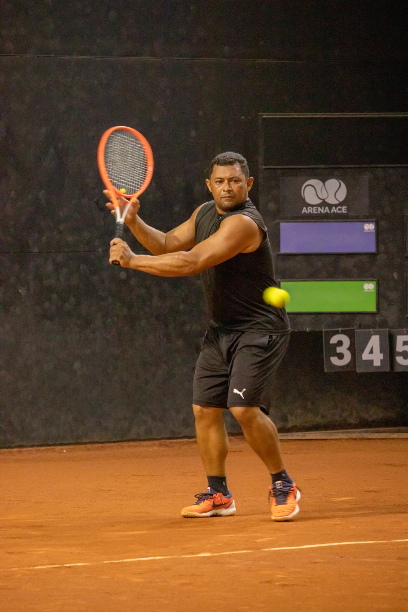

Mais de 20 anos dedicados ao tênis. Metodologia própria, formação ITF e Roland-Garros, e a experiência de estar em quadra com os maiores nomes do esporte mundial.

Tudo começou como gandula. Desde então, Natalino construiu uma trajetória marcada por dedicação, aprendizado ao lado de grandes nomes do tênis brasileiro e internacional, e uma metodologia própria que reflete cada experiência acumulada.
Formado em Educação Física, com especializações focadas no tênis de alta performance, Natalino alinha conhecimento técnico, ciência do esporte e experiência prática numa proposta de treinamento individualizada.
Viveu o dia a dia do tênis argentino nas academias Coria e Monachesi Hood, aprofundando o contato com o tênis sul-americano de excelência.
Conquistas dentro e fora de quadra que definem quem é Natalino Sousa.
Metodologia própria, atenção individualizada e foco no desenvolvimento técnico, físico e mental.
Treino 100% personalizado com foco nas necessidades individuais. Do iniciante ao atleta de alto rendimento.
Dinâmica de grupo para evolução técnica e tática, mantendo a qualidade e atenção de um treinador experiente.
Método lúdico e eficiente para introduzir crianças ao tênis com base sólida desde o início.
Treinamento específico para competições — estratégia de jogo, preparo físico e mental focados em resultados.
Consultoria técnica e prática para professores de tênis que querem elevar sua metodologia de ensino.
Programas para empresas, hotéis e espaços de lazer — experiências de tênis para todos os perfis.
Entre em contato pelas redes abaixo. O primeiro passo é uma conversa.
Seja para aulas particulares, consultoria para professores ou clínicas corporativas — Natalino atende no São Paulo FC e demais espaços. Manda uma mensagem e vamos conversar.
Ver modalidades de treino